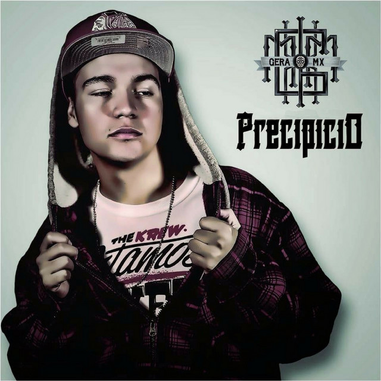

Inicios en la música
Después de un tiempo en Monterrey entro al sello de la "Mexamafia" donde se pudo dar a conocer en la républica. En ese tiempo grabó su primer disco elo cual fue titulado "Precipicio" el cuál subio a Youtube antes de irse un tiempo a vivir con su familia a Canadá para al volver darse cuenta que el disco fue muy bien recibido.

Luego de eso saco más albumes. Los siguientes 3 fueron:
- No veo, no siento
- No me mates antes de hoy
- Los niños grandes no juegan